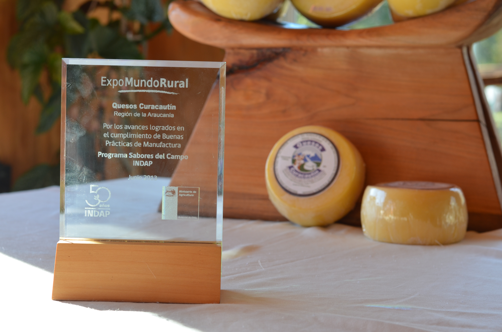
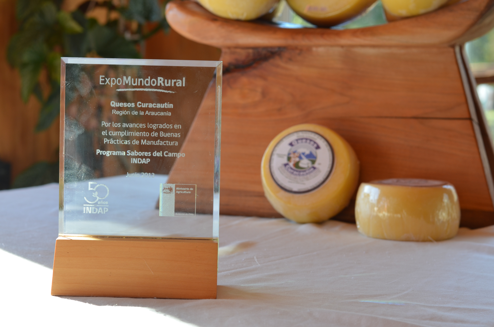

Historia
Inicio
Quesos Curacautín nace en el marco de un proyecto del Fondo para la innovación agraria (FIA), el que buscaba llevar a la mesa de los chilenos, lo mejor de la cultura quesera del sur de nuestro país. Así es como en nov 2004 se crea Quesos Curacautín, ubicada justo en medio de la cordillera, desde un comienzo reúne todos los elementos necesarios para producir un queso con la más alta calidad: aguas puras y cristalinas, campos limpios y fértiles, además de animales con un alto potencial de producción quesera.
Nuevas variedades
Desde entonces Quesos Curacautín inicia un largo camino de perfeccionamiento, en el que introdujo nuevas técnicas y a la vez nuevas variedades de quesos, ampliando así su oferta de productos. Quesos Curacautín Comienza a producir quesos condimentados con diversas especies, tales como el Merkén y el orégano, productos que hoy en día son emblemas de la marca. Con posterioridad comienza a experimentar en la producción de quesos de maduración prolongada, de 2 a 3 meses, de 4 a 6 meses y sobre 6 meses de maduración, obteniendo sabores intensos de carácter fuerte, los que hoy encantan a los paladares más exigentes.
Premios y reconocimientos
Quesos Curacautín ha sido participe de innumerable concursos y eventos gastronómicos, siendo tremendamente reconocido su aporte y participación:
- En marzo 2006 Quesos Curacautín se hace merecedor de su primer reconocimiento, gana el premio como mejor queso entre la Araucanía y Los Lagos, otorgado en la feria del queso, organizada por la Pontificia Universidad Católica de Chile sede Villarrica.
- En junio 2012, es reconocido como el emprendimiento con mayores avances en el cumplimiento de las buenas prácticas de manufactura, otorgado por instituto nacional de desarrollo agropecuario (INDAP), en el marco de la celebración de sus 50 años.
- El año 2013, Quesos Curacautin recibe el primer lugar en la novena versión del premio al emprendedor en la categoría micro empresa, otorgado por Banco Estado.
- El año 2014 Quesos Curacautín recibe un reconocimiento por su destacada participación en Temuco Chef, evento organizado por SERCOTEC, que reúne lo mejor de la gastronomía del sur de Chile.
- En febrero 2016 Quesos Curacautín es reconocido por su participación destacada en el evento Araucanía Potencia Gourmet, organizado por el SERCOTEC, el que reúne lo mejor de gastronomía gourmet de la IX región.
- El 2017 Quesos Curacautín participa del festival Feria artes y Sabores Villarica 2017, en el cual realiza una destacada participación.
- Quesos Curacautín ha participado en múltiples versiones de la feria Expo Mundo rural en las ciudades más importantes del país, obtenido un desempeño destacado. Participó en la Expo Mundo Rural Bio Bio 2013 en concepción, Expo Mundo Rural los lagos 2014 en Puerto Varas, Expo Mundo rural Santiago 2014, Expo Mundo Rural Frutillar 2015, Expo Mundo Rural Mayeco 2015 en Angol, Expo Mundo Rural viña del mar 2015, entre otras versiones.
 
